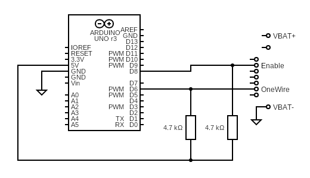

What you need
A handful of parts, no soldering required for a first test.
- Chrome or Edge on desktop Web Serial is not available in Firefox or Safari, and mobile isn't supported.
- An Arduino Uno or ESP32-C3 with a USB cable A genuine or compatible Uno with the optiboot bootloader, or an ESP32-C3 SuperMini. The uploader flashes either automatically.
- A few jumper wires and resistors The Arduino OBI interface is just a one-wire link with two pull-up resistors — see the schematic below.
- A supported battery Currently the Makita LXT 18 V packs (BL18xx / BL14xx) via the Arduino OBI interface.
The wiring
The Arduino OBI interface bridges your board's serial port to the battery's one-wire data line.

Arduino Uno
| Signal | Pin | Notes |
|---|---|---|
| Data (one-wire) | D6 | Pulled up to 5 V through the schematic's resistor. |
| Enable (EN) | D8 | Drives the battery's enable line when a command runs. |
| Power | 5 V / GND | The interface is powered from the Uno's 5 V rail. |
ESP32-C3 (SuperMini)
| Signal | Pin | Notes |
|---|---|---|
| Data (one-wire) | GPIO1 | Pulled up to 3.3 V — never 5 V. |
| Enable (EN) | GPIO0 | Drives the battery's enable line. |
| Power | 3.3 V / GND | The interface is powered from the ESP's 3.3 V rail. |
On the battery side, connect the interface's data and enable wires to the corresponding pads of your pack's communication connector (typically labelled D1 and D2) and a common GND. Exact pad positions vary between packs — check the upstream documentation for your model.
Read this before you wire anything
On an ESP32-C3 the pull-up resistors must be connected to the 3.3 V pin — connecting them to 5 V will fry the GPIOs and destroy the module.
Batteries store a lot of energy. Work with one hand in your pocket, never short the terminals, and double-check every connection before powering anything up. Incorrect wiring can damage the battery or your board.
Use this software at your own risk. It is provided as open source (GPL-3.0) with no warranty and is not affiliated with or endorsed by Makita.
Next steps
Once the interface is built and wired, you're minutes away from a diagnosis.
Flash the firmware
Plug your board into USB and flash the Open Battery Information firmware straight from the browser — no Arduino IDE needed.
Connect the board
Open OBI-1, pick your board, and press Connect. It resets and identifies itself automatically.
Read the battery
Insert a battery, press Read battery, and see cell voltages, temperatures, charge cycles, and status at a glance.